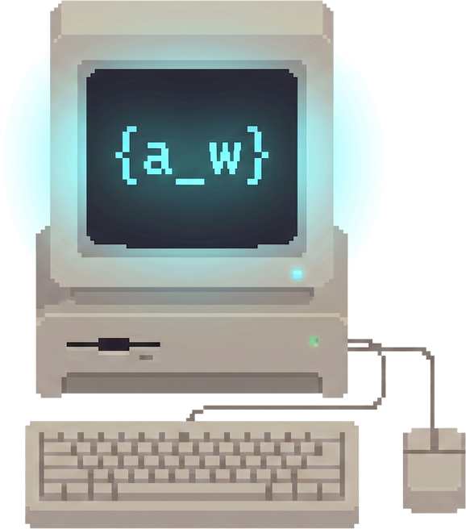

Build log · one system, start to finish · July 2026
How I built the AI Business Pulse — and what it taught me.
Small businesses want a weekly report. Almost none of them want to maintain the tool that produces it. So I built a pipeline where a single workflow can serve many businesses and the report writes its own summary — then spent most of the time making sure it could be trusted. This is the honest version: the decisions, and the bugs that caused them.

How I build
I find where a business is losing money or time to a manual process, and I ship the working fix — end to end, alone, fast. The stack is chosen for that: n8n for orchestration, Google Apps Script for live dashboards, Python for build pipelines, Clay for enrichment, and the Claude platform for the AI layer.
// the one rule everything obeys
Formulas compute every number before the model writes a word.
Language models are strong writers and unreliable arithmetic engines. So the sheet calculates the totals and flags deterministically, and the AI only narrates figures that were already verified. It never invents one.
That rule wasn’t theoretical. During an early build the model summed a column itself and got it wrong. The fix wasn’t a better prompt — it was removing the model’s opportunity to do arithmetic at all, and injecting the precomputed total into the prompt instead.
The problem
A weekly business review is genuinely useful and genuinely tedious. The numbers live in a spreadsheet, someone assembles them by hand, and the moment that person is busy the report stops happening. Reporting tools exist, but they ask a small business to adopt and maintain a new system — which is the reason the spreadsheet won in the first place.
So the constraint I set: the business keeps its spreadsheet, and the reporting comes to them. No new tool to learn, no migration.
The system
A config sheet is the control surface
One sheet lists every client: name, their metrics sheet ID, recipient, and a status column. Adding a client is a row, not a deployment. Deactivating one is a cell edit. This is the design decision that makes it scale — ten clients would be one maintained workflow, not ten.
Filter, then loop per client
The workflow reads the config, filters to active rows, and iterates. Each client’s own sheet is read in isolation, so one client’s data can never appear in another’s report.
The sheet does the math, the model does the prose
Totals, deltas, and status flags are computed by formula. Those verified figures are handed to the AI step, which writes two or three sentences of plain English: what moved, what needs attention, what to do next.
A human gate on anything outbound
The reporting digest sends on a schedule. But the companion product — escalating payment-chase emails — deliberately does not send on its own. It drafts, and a person approves. That is a product decision, not a technical limitation.
The engineering judgment
The interesting work wasn’t wiring the happy path — a model does that before lunch. It was the four times I didn’t trust it yet. Each one left a permanent check behind.
Proving isolation instead of assuming it
A loop setting (executeOnce) looked like it might collapse a multi-client run
into a single send. The docs didn’t settle it, so I stopped reading and ran it live.
The assumption was wrong and the setting was fine — but now it’s a fact read from the execution record, not a belief taken from a doc.
Driving the API when the UI fought back
The visual canvas was unreliable for precise edits — drags landed wrong, a stray paste could corrupt a whole workflow. So I stopped clicking and drove it from the page context.
Exact, reviewable changes instead of hopeful ones. Choosing the less obvious interface because it’s the more verifiable one is a tradeoff I’d make again.
Deriving status colors instead of typing them
Google Sheets drops conditional formatting on xlsx import, so the demo workbooks bake colors in statically — and static colors drift from the formula that computes the visible tier.
build log prints every input → computed tier so a mismatch is visible
Two sources of truth that never met
The one that still stings. A dashboard shipped with a headline that flatly contradicted the rows beneath it:
▸ 2 jobs flagged OVER BUDGET −$500 −$600
Five summary formulas were off by one column, so “total quoted” was summing actual cost. It survived review because the build log computed totals independently in Python and printed the right answer while the sheet showed the wrong one — two sources of truth that never met.
label “Total quoted” → sums col E (Actual cost) ✗ flagged
None of these were caught by being careful. They were caught by building the thing that makes carelessness visible — and then the check outlives the bug.
What it does now
The pipeline ran on a schedule against sample sheets, computed the totals, wrote its own summaries, and emailed a per-client digest — end to end, unattended. Adding a business is one row. The hosted trial it ran on has since lapsed, so that build is not executing today; the workflow is exported and runs again on import. The checks that caught the bugs above still run automatically before anything ships.
Update, August 2026 — the pipeline did not stop being true, it changed hosts.
The same five layers now run on Zapier, and they run on a schedule rather than on demand. One
workflow reads an invoice sheet every Monday and drafts a chase email per overdue invoice, with
the tone derived from how late the invoice is rather than chosen. A second watches this
site’s own contact form and drafts a personal reply within about a minute of a submission.
The house rule survived the move intact: the model never does arithmetic —
it quotes figures the sheet already computed, and writes [not in sheet] rather than
guessing. That is checkable rather than asserted: the digest reproduced the workbook’s own
total and its exact tier split, which is the test that matters.
And the limit, stated plainly: neither workflow can send. There is no send step in either one — every message waits as a draft for a human to approve, which is a design position and not a missing feature. Both run against my own business, not a customer’s. I have zero paying clients, so “running” here means running for me.
Honest scope: this is a month-one business. Every figure in the demos is sample data and is labeled as such on the artifact itself. I’m describing what I built and operate — not a client roster.
The same idea, as something you can press
Everything above is a system I ran. The argument inside it — that the machine should do the work and a human should keep the judgment — is now a free tool you can try in about ten seconds, without sending me anything.
Drop in a work log and an invoice export and the Money Leak Finder shows only the mismatches: jobs completed but never invoiced, invoices aging past 60 days. Then it writes the follow-up email for each one, and the tone is derived from how late the invoice is, never chosen — at 77 days it says “I would rather ask than assume it got lost,” at 99 it says “I want to get it closed out rather than let it drift further,” and past 120 it stops being gentle. There is a fourth case for an invoice with no date: it says so, and tells you to check the age before sending, because a reminder carrying the wrong number does more damage than no reminder.
It cannot send. There is no server behind that page and no mail access — it runs entirely in your browser, makes zero network requests after load, and you can confirm that in your own network tab. It drafts. You approve. That is the same gate as the pipeline above, small enough to hold in your hand.
// your turn
Send me your messiest spreadsheet.
I’ll build you a working, self-updating version of it and send it back within a day — free, and yours to keep whether we ever work together or not. Same checks described above run on it.
Hiring rather than outsourcing? I’m also open to automation, AI-operations, and solutions-engineering roles — the work above is the work. Background and résumé are on LinkedIn, or email me.